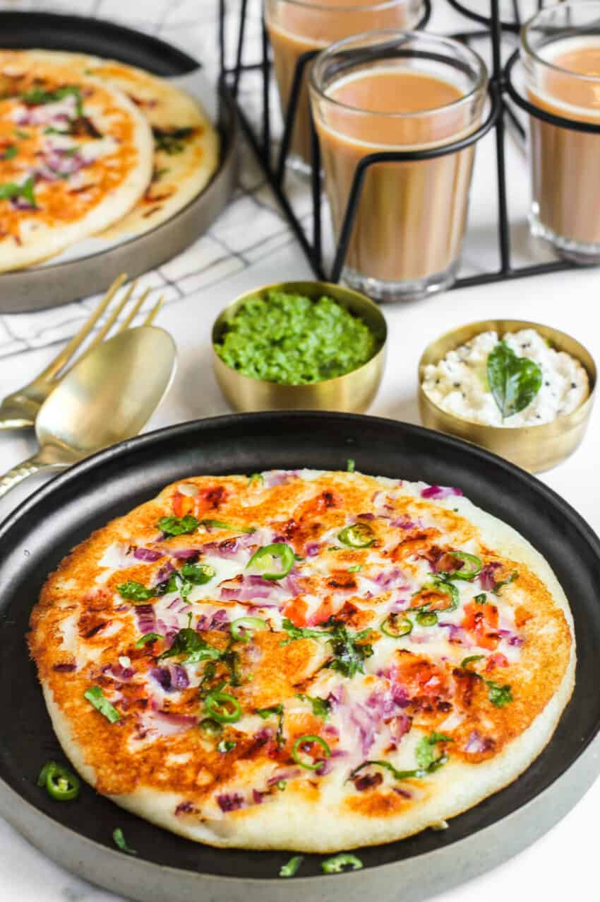
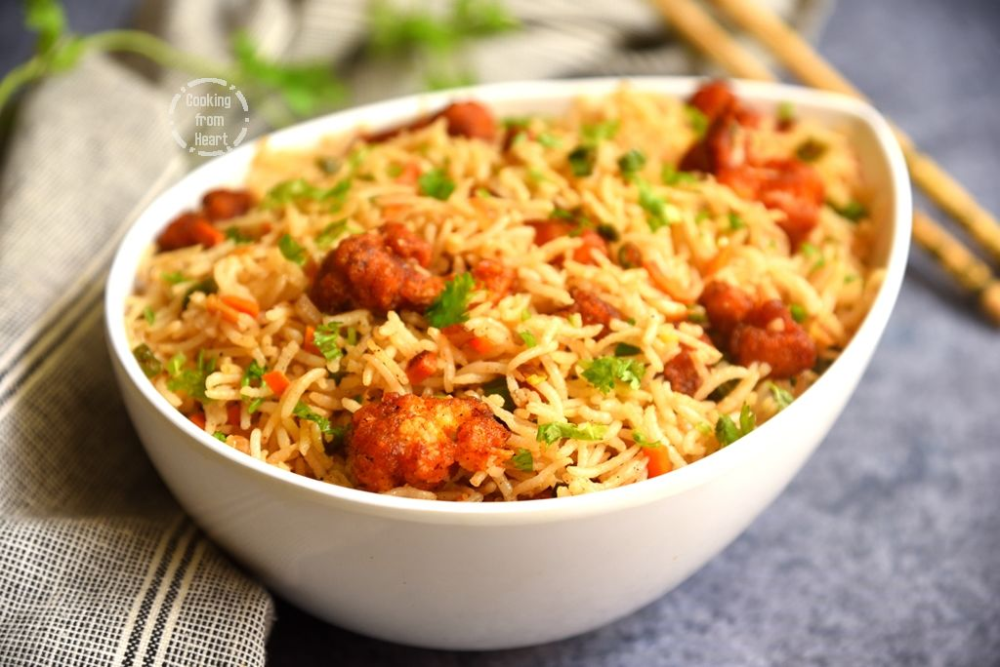

Recipes
Uthappam

- Ingredients: Batter,Carrot,Onion,Parupu podi,Coriander,Ghee
- Instructions: Prepare batter by adding salt and Baking soda.
Cut veggies and prepare podi .Pour thick batter on the pan.
Add veggies,Podi,ghee to it..Ready to serve
Gobi Fried Rice

- Ingredients: Cauliflower,Spring onion,carrot,Beans,Basmati rice, fried rice masala,Pepper
- Instructions: Add oil ,spring onion,carrot,beans and add salt to it.
Add gobi manchurian, tomato and soya sauce and add rice ,mix it.
Add Pepper and fried rice masala
ALOO PARATTA

- Ingredients: Wheatflour,potato,chillies,onion,salt.
- Instructions:Prepare the dough and boil potato.
Cut veggies and mix smashed potato with dough
Heat the pan and add the paratta mix to it. serve it with raita to eat